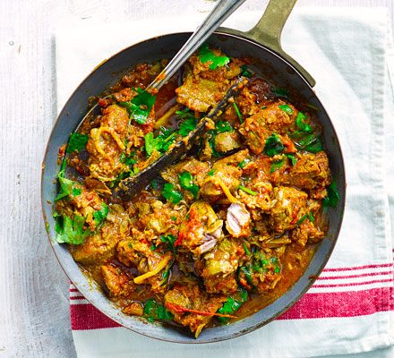

Lamb Curry

A quick and simple inexpensive lamb curry recipe
Ingredients
- 2 cups plain yogurt
- 2 tablespoons tomato paste
- 2 tablespoons lemon juice
- 4 cloves garlic, minced
- 2 teaspoons ground cumin
- 2 teaspoons ground corriander
- 2 teaspoons curry powder
- 3 lb lamb leg, cubed
- 3 tablespoons butter, melted
Method
- Mix yogurt, tomato paste, lemon juice, ginger, garlic, cumin, coriander, curry, and paprika together in a glass or ceramic bowl. Refrigerate for 8 hours or overnight.
- Add lamb to the marinade, cover, and refrigerate for at least 4 hours.
- Bring lamb to room temperature, 15 to 20 minutes.
- Meanwhile, preheat the oven to 350 degrees F (175 degrees C).
- Bake in the preheated oven until chicken is no longer pink in the center, 20 to 35 minutes, drizzling with melted butter during the last 5 minutes of cooking.